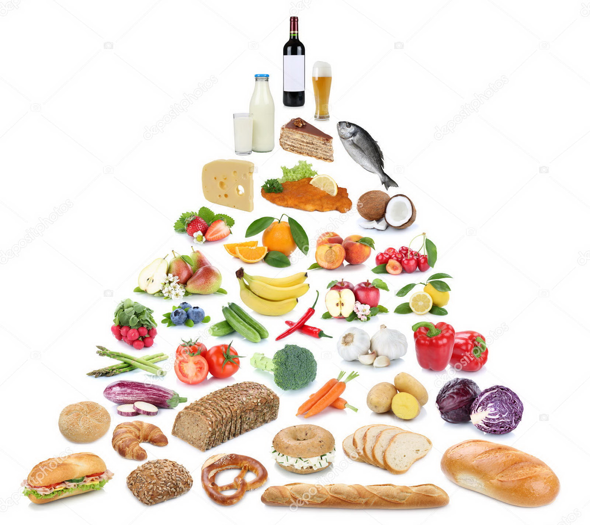

Пища это то, без чего невозможна жизнедеятельность любого человека, а здоровье напрямую зависит от рациона питания. Некачественная или вредная еда способна нанести ущерб организму, поэтому очень важно уметь составлять правильную программу питания на каждый день. Здоровая пища не всегда эталон вкуса, но с позиции пользы ей нет аналогов.Правильное и здоровое питание в наши дни уже не показатель аристократичности, а ответ на темп и условия жизни. Все больше людей сегодня занимаются спортом, который неотделим от здорового питания. Выбор рациона и составление меню на день, неделю, месяц становится насущной задачей для всех, кто задается вопросами похудения, снижения веса или роста мышц, улучшения самочувствия в целом
Правильное питание (или здоровое питание) – это сбалансированный рацион из натуральных и качественных продуктов, которые удовлетворяют все нужды организма, кроме того, идут ему на пользу.
Одним из известных авторов книг о правильном питании является американский натуропат, приверженец нетрадиционной медицины, вегетарианец Герберт Шелтон (1895-1985). Его идея о пользе натуральной еды стала прогрессивной: Шелтон полагал, что природа позаботилась о нуждах человека в пище в полной мере, а значит, нашему организму необходимы только натуральные продукты.Шелтон также развивал диетологическую концепцию раздельного питания в книге «Правильное сочетание пищевых продуктов». Идея данной диеты в несовместимости некоторых пищевых продуктов при их одновременном употреблении. Например, автор утверждал, что нельзя комбинировать еду, богатую белками, с углеводосодержащими продуктами, сочетать молоко с другой пищей, а жиры с белками. Раздельное питание заинтересовало не только желающих вести здоровый образ жизни, но и специалистов в области диетологии и физиологии. Были проведены клинические исследования, в результате которых удалось установить, что полезно не столько раздельное питание, сколько употребление здоровой еды, так как на похудение и хорошее состояние организма влияет не принцип разделения пищи, а общее снижение ее калорийности.
Также актуальными для правильного питания являются постулаты, изложенные в одной из самых популярных современных книг о здоровой пище «Китайское исследование». Это произведение написано известным специалистом Колином Кэмпбеллом, почетным профессором кафедры пищевой биохимии Корнелльского университета, обладателем премии Национального института здоровья США. Вот некоторые выводы из этой книги:
Обобщив информацию из этих произведений, можно выделить несколько рекомендаций о том, что нужно знать о правильном питании и здоровой еде:
Итак, основой здорового образа жизни является правильное питание, которое зависит от потребляемой нами пищи. По содержанию различных питательных элементов и витаминов, все продукты можно разделить на группы, которые позволят составить оптимальный рацион в течение дня.
Опираясь на принципы правильного питания, специалисты Гарвардской школы общественного здоровья под руководством американского диетолога Уолтера Виллетта разработали универсальную схему питания человека в течение дня пищевую пирамиду. Продукты, расположенные в нижней части пирамиды, рекомендуется употреблять в пищу как можно чаще, а продукты из верхней части следует употреблять в ограниченных количествах или вовсе исключить из своего рациона. Кроме того, стоит отметить, что в основании данной пирамиды также лежат физическая активность и достаточное потребление жидкостей, предпочтительнее минеральной воды.

Вот строение пирамиды с перечнем необходимых продуктов и их свойств снизу вверх:
Это основа здорового питания. Эти продукты обеспечивают организм сложными углеводами, важным источником энергии. Цельнозерновая пища богата витаминами группы В, минералами и клетчаткой, необходимыми каждому человеку. Вопреки распространенному мнению, эти продукты не приводят к набору веса, если не добавлять к ним сливочное масло, сыр или соусы
Овощи обеспечивают нас витаминами, являются отличным источником белка, кроме того, они не богаты жирами. Максимальное количество питательных веществ содержится в овощах насыщенного зеленого, желтого и оранжевого цвета, а также в крахмалистых овощах – картофеле и ямсе. Овощные соки тоже очень полезны для организма.
Фрукты – богатый источник витаминов, в первую очередь витамина С. Это низкокалорийные продукты, практически не содержащие жиров. Фрукты полезны в любом виде: свежем, замороженном, консервированном, сушеном, а также в виде сока, за исключением сильно подслащенных нектаров и сиропов на фруктовой основе.
Животные продукты являются отличным источником белка, железа, цинка и витаминов группы В, так же как фасоль, орехи и семена. Тофу (соевый творог), а также белая фасоль богаты необходимым организму кальцием. Миндаль является хорошим источником витамина Е.
Молочные продукты незаменимые источники кальция. Они также обеспечивают организм белками и витамином B12. Для употребления в пищу следует выбирать нежирные сорта молочных продуктов, поскольку в них содержится минимум холестерина, насыщенных жиров и, конечно же, калорий.
Эти продукты высококалорийны и очень питательны. Ими не следует злоупотреблять, но и полностью отказываться не стоит. В рационе обязательно должны присутствовать растительные масла, которые являются богатым источником витамина Е (организму достаточно 1 столовой ложки в день). Продукты, содержащие патоку, могут быть полезны как источник железа.